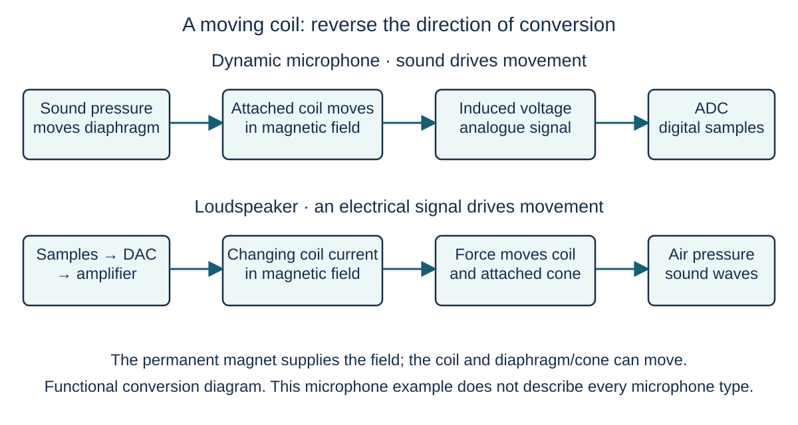

Hardware / 01
From a voice to stored samples, then back to sound

Look closely
What must change between air movement and a list of binary samples?
Imagine recording a short word and playing it back. The diagram shows a moving-coil microphone and a loudspeaker. Find the moving part at each end and predict what makes it move.
Step 1 / 5
Sound first moves the microphone
Sound is a variation in air pressure. It moves the microphone diaphragm. In this moving-coil example, a coil is attached to the diaphragm and sits in a permanent magnetic field. As the diaphragm moves, the coil moves with it. This is the first physical response to the voice.
Step 2 / 5
Movement becomes an electrical signal
The coil moves through the magnetic field and a varying voltage is induced. This analogue electrical signal follows the sound variations. A transducer converts one form of energy into another; here the microphone converts sound into an electrical signal. Other microphone designs use different physical mechanisms.
Step 3 / 5
Convert the signal into data
Recall sampling from Section 1. An analogue-to-digital converter, or ADC, measures the signal at regular instants, quantises each amplitude and encodes it in binary. The resulting sample values can be held in RAM and saved to secondary storage. A digital-output microphone can include this conversion inside its case.
Step 4 / 5
Prepare stored data for playback
The stored samples are numbers, so a digital-to-analogue converter, or DAC, turns the sample sequence into a varying analogue electrical signal. An amplifier supplies enough power to drive the speaker. The DAC prepares the signal; it does not itself move the air to make audible sound.
Step 5 / 5
Current now moves the speaker
Changing current through the speaker voice coil creates a changing magnetic field. Its interaction with the permanent magnet produces a force, moving the coil and attached cone. The cone moves the surrounding air, producing sound waves. Compare the direction of conversion: microphone motion produces a signal; speaker current produces motion.
Explain it yourself · Teacher-written check
A microphone diaphragm cannot move, but the ADC works. Why will changing the sampling rate not restore the recording?
Check your reasoning
The microphone cannot produce the normal electrical voice signal because the first physical conversion has failed. The ADC can sample its input, but cannot recover a voice signal that the microphone never supplied.
Apply the idea · Teacher-written practice
Explain the difference between the moving-coil microphone and loudspeaker in a recording/playback system. Include what causes motion in each and where ADC and DAC are required.
Answer and checking points — teacher-written
- Sound pressure moves the microphone diaphragm and its attached coil in a permanent magnetic field.
- That movement induces a varying analogue voltage.
- An ADC samples, quantises and encodes the input signal for digital processing.
- During playback, a DAC supplies an analogue signal from the stored sample values.
- After amplification, changing current in the loudspeaker coil produces force in the magnetic field, moving the cone and air.
Common error: A microphone’s mechanical motion produces the electrical signal; the loudspeaker’s electrical drive produces motion.
Keep this idea
Recording needs sound → movement → analogue signal → binary samples. Playback reverses the information path using a DAC, amplifier and moving speaker.
The sample sequence now exists as data. How can a device store it so that it survives shutdown?
Learning goals
- Describe the principal operation of a microphone.
- Describe the principal operation of speakers.